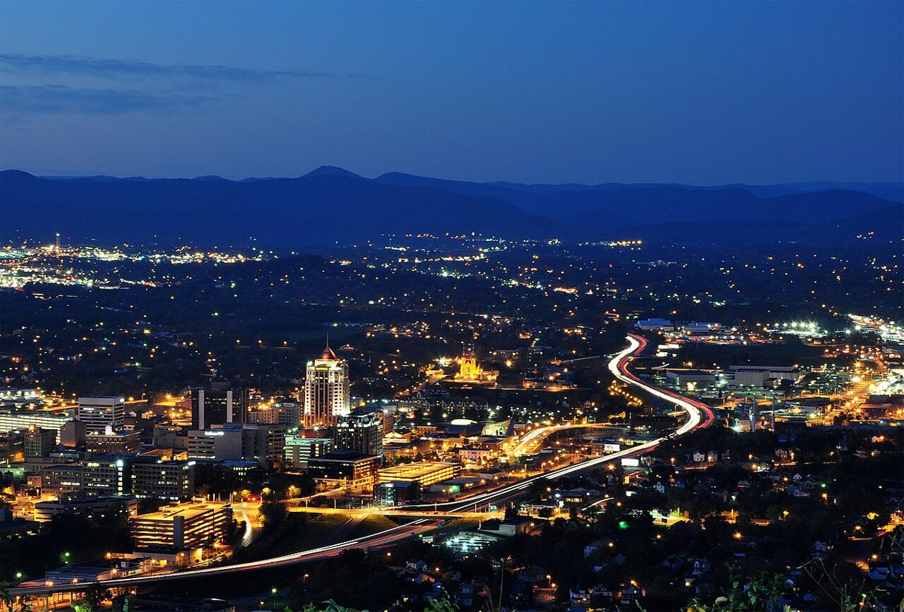

Morning · Arrive from Floyd
Allow roughly 1–1½ hours driving. If your Thursday commitment is early, move the overnight here on Wednesday instead of relying on a morning transfer.
VIRGINIA · THE FINISH · OR NIGHT FOUR ALTERNATIVE
Keep the last day flexible around your actual arrival deadline and car return. Roanoke can be a Thursday museum-and-overlook finish, or a Wednesday overnight with live music.
THE FEEL OF THE PLACE
Roanoke is the trip’s urban finish: downtown streets, the market area, museums and a mountain overlook within the same day. It offers a comfortable change after several small towns, with inexpensive counter meals alongside more elaborate restaurants. Keep Thursday centered on one downtown visit and lunch, leaving the Star overlook optional around fuel, luggage and the actual airport return deadline.

Representative photograph from the linked archive; seasons and current conditions will differ.
A SUGGESTED RHYTHM
Allow roughly 1–1½ hours driving. If your Thursday commitment is early, move the overnight here on Wednesday instead of relying on a morning transfer.
Thursday opening hours are 10am–5pm and general admission is free. This fits well before the provisional 4pm car return, with time reserved for fuel and the airport. Special programs or exhibitions may have separate terms.
The tourism listing gives daily access of 7am–9pm and free admission. Allow 30–45 minutes at the overlook plus the drive. The Mill Mountain Spur and Roanoke Mountain Loop are different roads: the latter is closed in the current Parkway report.
The rental comparison uses ROA airport return at 4pm Thursday; it remains a planning assumption. Confirm the exact return branch and deadline on the booking before committing to late plans.
EAT WELL, KEEP IT SIMPLE
Casual choices for this stop, with restaurant information and independent reviews or local guides to help you choose. Published prices exclude extras unless noted; recheck hours before setting off.
A tiny historic lunch counter serving burgers, hot dogs and chile. Order a Cheesy Western for a distinctive, inexpensive Roanoke bite rather than a long sit-down meal.
Budget: Official menu: Cheesy Western $3.95; hamburger $2.55; chile $2.85. Tax and drinks additional.
When to go: Downtown and tourism authorities list 24-hour service, including Thursday.
Very large pizza slices near the downtown market make a simple lunch before the car return. Order by the slice rather than a whole 28-inch pie for two.
Budget: Official menu lists cheese slice $5.50 and pepperoni slice $6.50; tax and drinks extra.
When to go: Official Thursday hours: 11am–11pm.
CHECK BEFORE YOU GO
Road and trail conditions can change with weather and repairs. Driving and visit durations are planning allowances, not live navigation. Recheck opening hours and dated events shortly before travel.